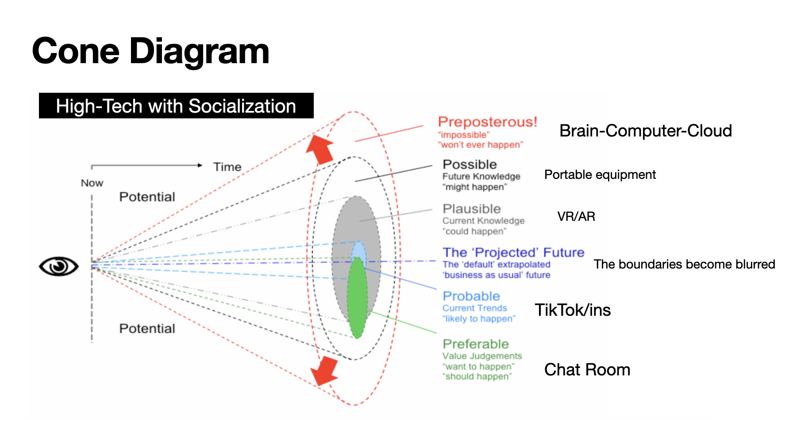
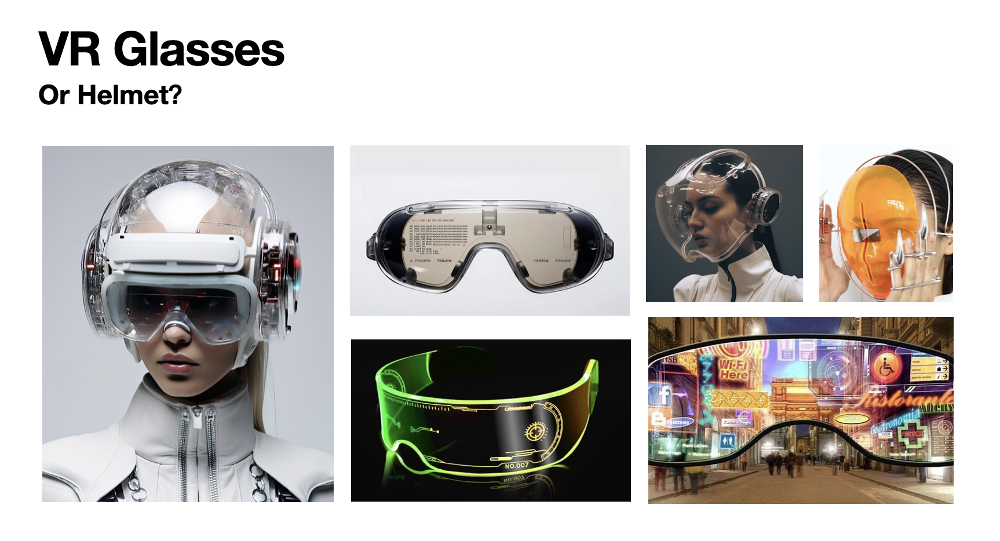
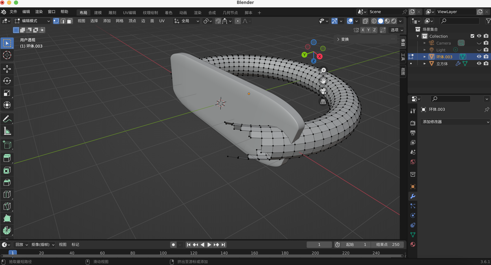
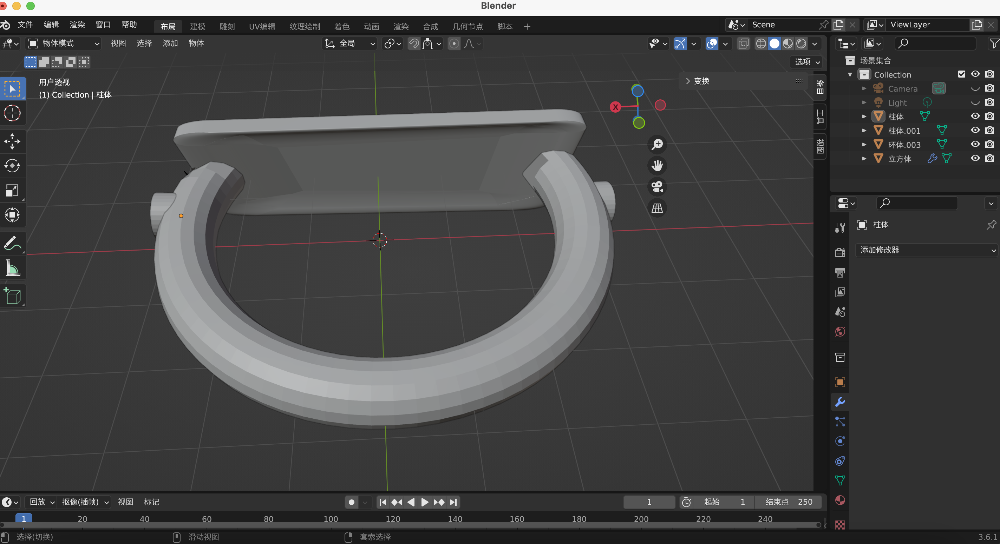
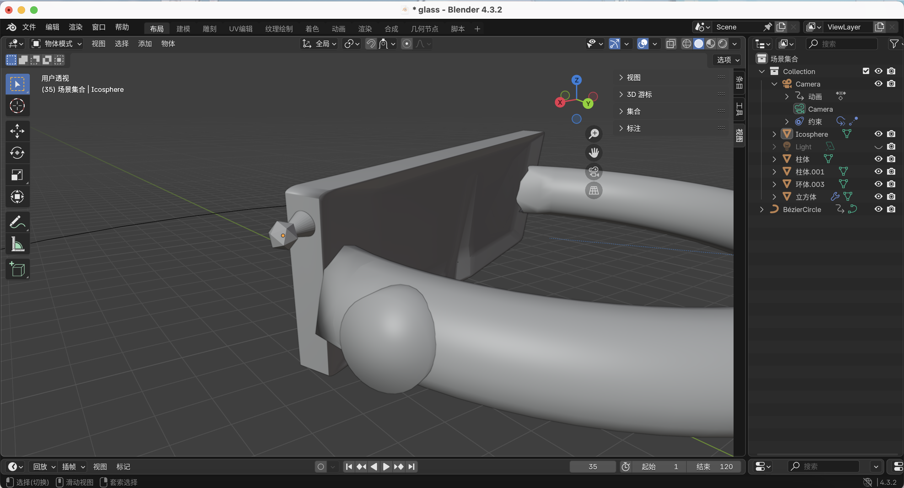
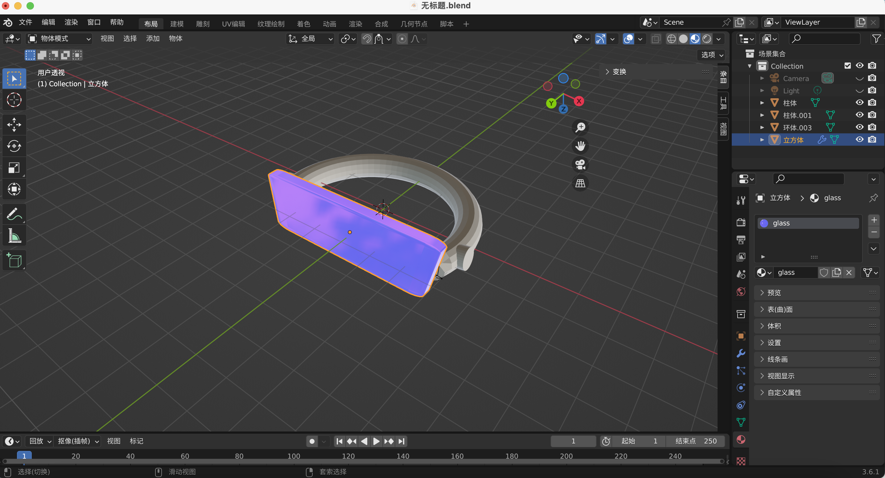
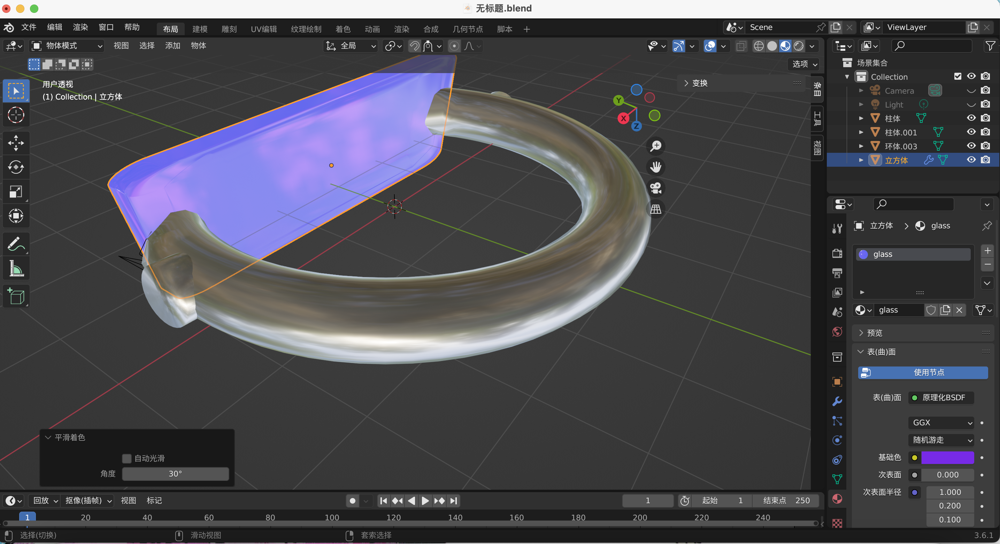
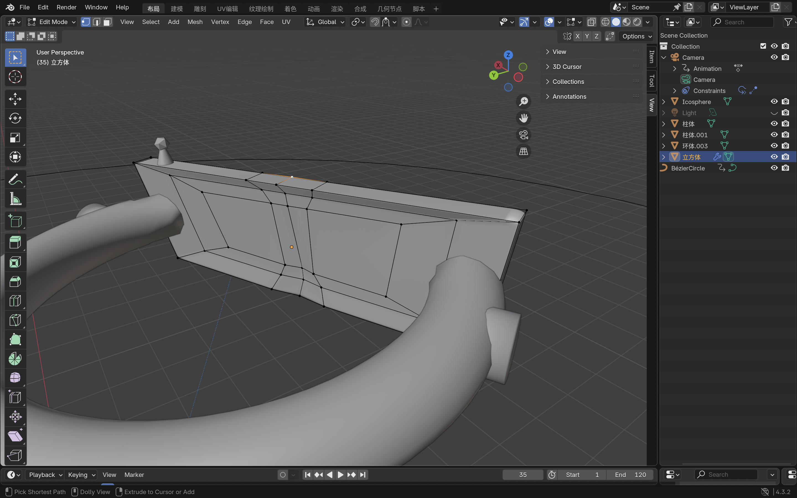
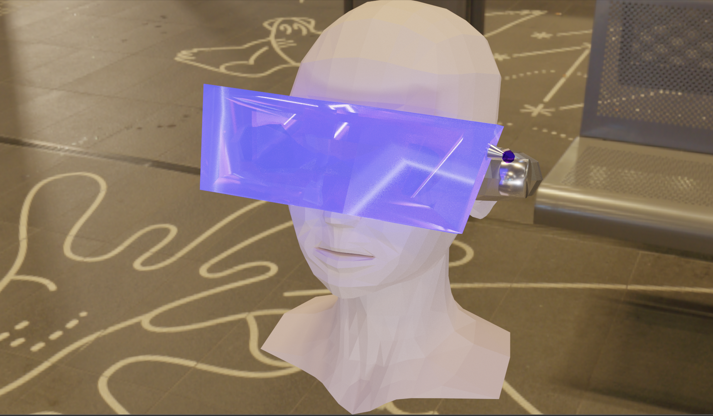

I thought about the potential of VR technology over the next 20 years in terms of high-tech socialization. In my vision, VR devices will gradually replace our cell phones in the future. Here is my moodboard. I'm going to design a VR glasses that I can carry around with me. In my imagination of the future, this device replaces cell phones. People can plunge into the virtual world at any time.
 I made the prototype VR glasses out of rectangles and rings. After completing the base construction, I made two buttons out of cylinders. These two buttons are used to control the volume and the on/off switch separately. The little knob in the third picture is being used to switch channels. I'm having trouble with the modeling process. When I am trying to blend or delete some points, I delete points on another model through one model. Therefore, I need to keep adjusting the angle during the process.
  I chose blue-violet as the main color for the lenses. Also I made it reflective by adjusting the refractive index. The torus is a silver gray color with a metallic effect added.
 Considering that VR glasses need to be worn, I made an indentation to accommodate the nose. Also put the knobs from the top to the side.
I placed this device in a public setting. In my imagination, the glasses can be used at any time.
